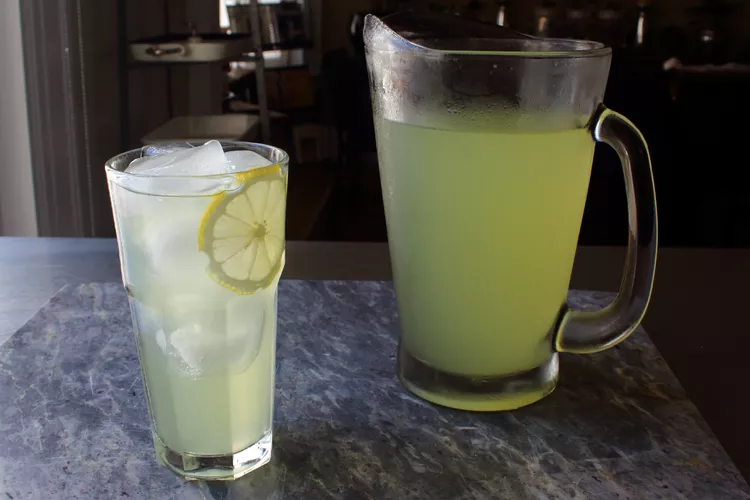

State Fair Lemonade

Ingredients
- 6 lemons
- 1 1/4 cups white sugar
- 5 cups cold water
Directions
- Wash lemons and peel off all the zest using a vegetable peeler; set peeled lemons aside. Add
lemon
zest
to a bowl and cover with sugar; toss to combine. Cover and let sit for a minimum of 2 hours, or
up
to
overnight.
- Bring water to a boil in a pot over high heat; turn off heat and pour in lemon-sugar mixture.
Stir
and
let sit until sugar is completely dissolved, about 5 minutes.
- Pour through a mesh strainer back into the same bowl and discard the zest. Let cool to room
termperature, 20 to 30 minutes.
- Cut lemons in half and squeeze juice into the bowl. Pour lemonade into a serving pitcher; cover
and
chill thoroughly before serving over ice, at least 2 hours.